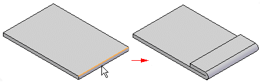
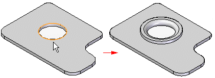
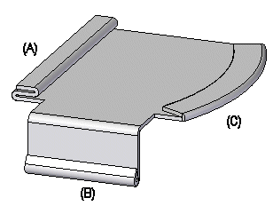

Hem command
Use the Hem command  to construct a hem, where the material folds back.
to construct a hem, where the material folds back.
In the synchronous environment, you can construct a hem along a linear edge.

In the ordered environment, you can construct a hem along any edge on a sheet metal part. For example, you can construct a hem along a liner edge
or, along the curved edge of a circular cutout.

Bends created with the command are included in the bend table.
You can use the Hem Options dialog box to specify the type of hem to be created. The Hem Type list contains several types of hems from which to choose. For example, you can define s-flange (A), loop (B), and closed (C) hems.

You can use the Hem Options dialog box to specify the type of hem to be created. The Hem Type list contains several types of hems from which to choose.
How do I
Construct a hemMove, rotate, or edit a hem
Look up more details
Hem command barHem Options dialog box
Hem command bar